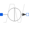

I_pulsePulse current source |

|
Information
This information is part of the Modelica Standard Library maintained by the Modelica Association.
Periodic pulse source with not limited number of periods.
A single pulse is described by the following table:
time |
value |
0 |
I1 |
TD |
I1 |
TD+TR |
I2 |
TD+TR+PW |
I2 |
TD+TR+PW+TF |
I1 |
TSTOP |
I1 |
Intermediate points are determined by linear interpolation.
A pulse it looks like a saw tooth, use this parameters e.g.:
Parameter |
Value |
I1 |
0 |
I2 |
1 |
TD |
0 |
TR |
1 |
TF |
1 |
PW |
2 |
PER |
1 |
Note:
- All parameters of sources should be set explicitly.
- since TSTEP and TSTOP are not available for modeling in Modelica, differences to SPICE may occur if not all parameters are set.
Parameters (7)
| I1 |
Value: 0 Type: Current (A) Description: Initial value |
|---|---|
| I2 |
Value: 0 Type: Current (A) Description: Pulsed value |
| TD |
Value: 0.0 Type: Time (s) Description: Delay time |
| TR |
Value: Type: Time (s) Description: Rise time |
| TF |
Value: TR Type: Time (s) Description: Fall time |
| PW |
Value: Modelica.Constants.inf Type: Time (s) Description: Pulse width |
| PER |
Value: Modelica.Constants.inf Type: Time (s) Description: Period |
Connectors (2)
| p |
Type: PositivePin Description: Positive electrical pin |
|
|---|---|---|
| n |
Type: NegativePin Description: Negative electrical pin |